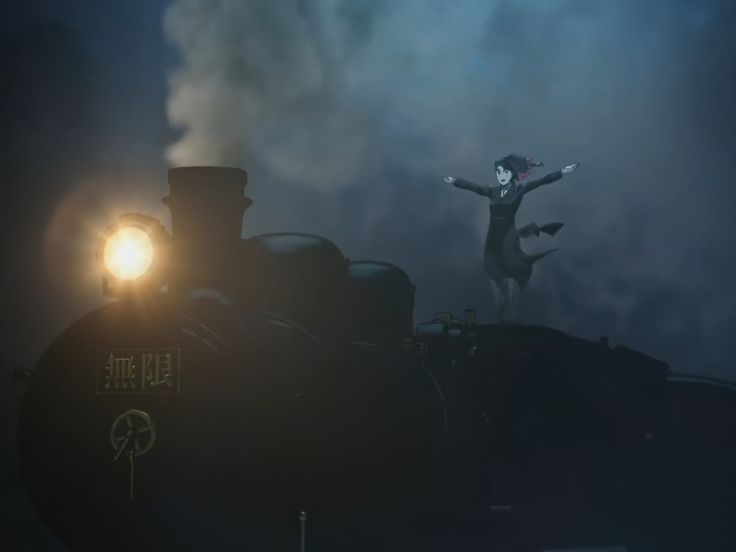
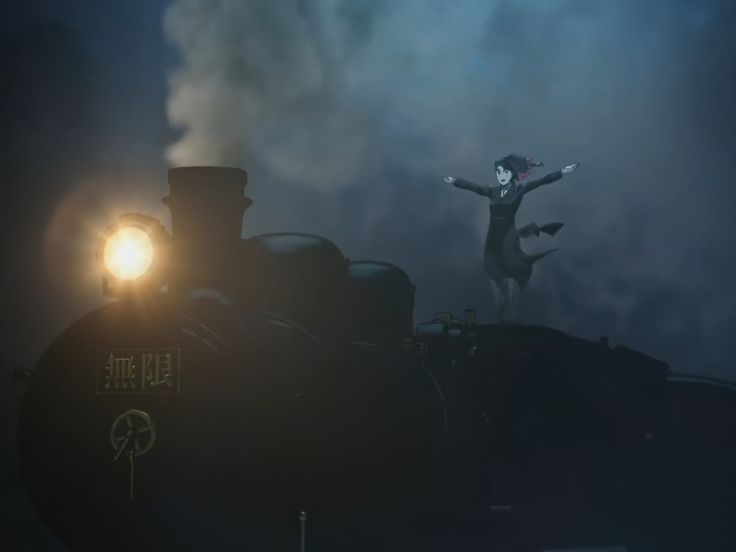

Другий сезон продовжує події одразу після завершення першого. Танджіро, Незуко, Зеніцу та Іноске вирушають на місію в «Нескінченний потяг», де безслідно зникають пасажири та винищувачі демонів. Разом із ними працює Кйоджуро Ренгоку — вогняний Хашира, харизматичний та надзвичайно сильний воїн, який веде команду до зіткнення з потужним демоном.
 
На борту потяга герої стикаються з демоном Енму, який отримав силу змушувати людей бачити сни та тримати їх у ілюзіях. Важкий бій змушує кожного подивитися вглиб себе, зіткнутися зі страхами та болем минулого. Після перемоги над Енму на сцену виходить ще більша загроза — демон вищого рангу Акдза, і відбувається одна з найтрагічніших і найгероїчніших битв серіалу.
Цей сезон особливо емоційний, адже піднімає теми жертовності, сили духу та того, що означає бути справжнім героєм. Ренгоку стає символом непохитної віри в добро, а для Танджіро та його друзів ця місія стає точкою зростання — морального, бойового й особистісного. «Нескінченний потяг» — це подорож не лише по рейках, а й до глибини серця кожного героя.